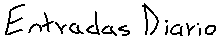

estoy aburrido como la mierda. estas semanas estuve muy entretenido montando mi arch linux (btw) y la pagina esta, pero ahora que tengo todo medio resuelto, estoy aburriiiiido. imagino que TAN ABURRIDO estoy, que hasta me digne a escribir algo para la pagina lol. ahora OCUPO un nuevo proyecto que me llene de ganas de vivir y de aprender y de ganas de LEVANTARME DE LA PUTA CAMA. he estado pensando en hacer un videojuego con godot, pero no se me ocurre ninguna idea interesante, y me niego a copiar algun otro juego o algo asi, tiene que ser algo...
hola! al fin hice que el apartado de blog y diario funcionara. fue sorprendentemente facil, no se porque me sordie tanto tiempo, si solo me tomo como dos horas :p. el caso es que ya funciona, y esta es mi primera entrada, asi que hablare un poco de las razones que hay detras de esta pagina, pero desde ya advierto que no todo tiene un porque, ni ocupa tenerlo, ya saben, como la cancion esa de los flakos pues estaba aburrido y tal, vi que mucha gente tenia paginas en neocities y me interese por el tema. pense que seria...